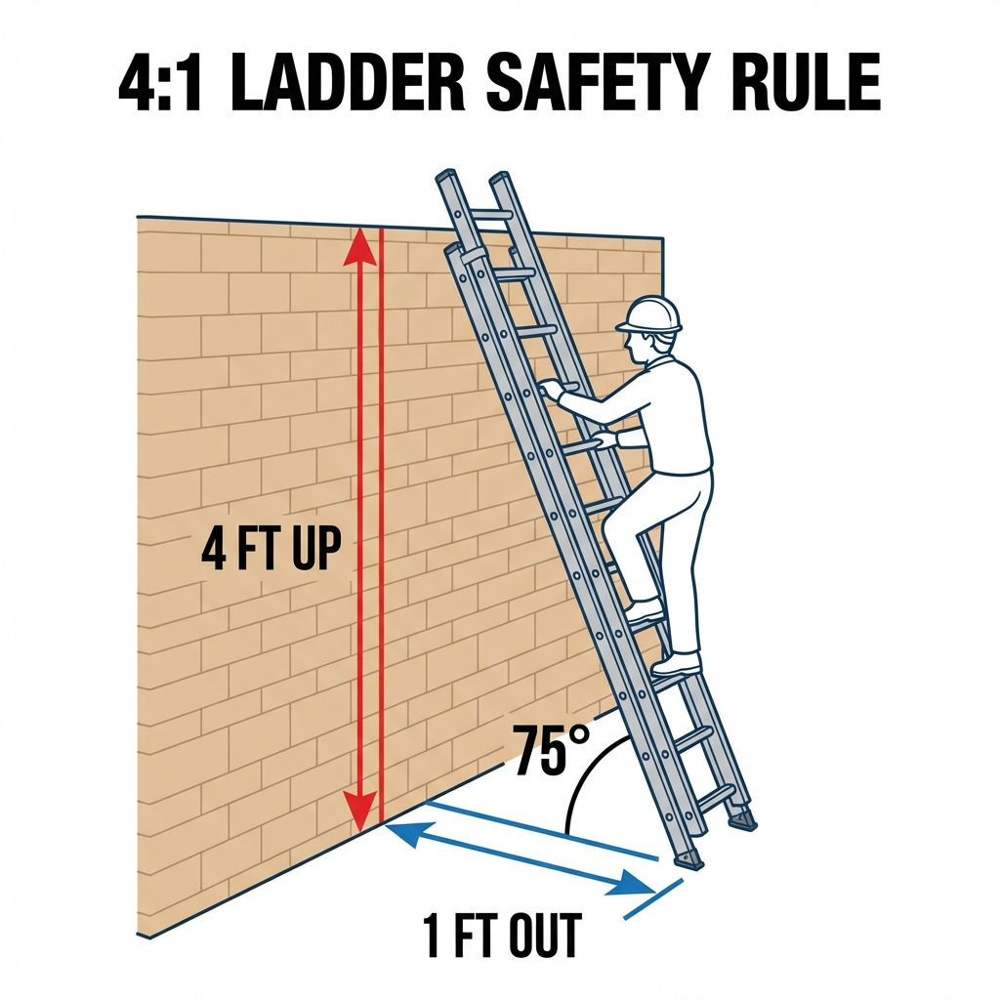

Look at the sticker on the side rail.
For every 4 feet of height, move the base 1 foot out.

The ladder will tip backwards, throwing you off.
The feet will slide out from under you.
Do this EVERY time you grab a ladder.
I will maintain 3 points of contact.
I will keep my belt buckle between the rails.